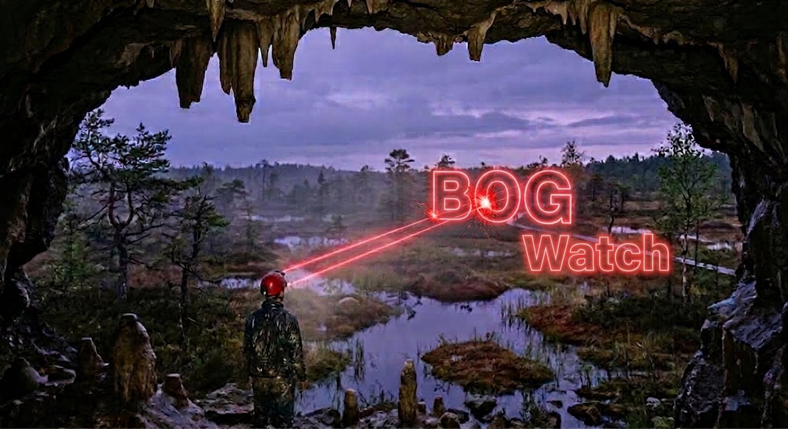

Public records · facts, sources and questions
A recurring call on the National Speleological Society Board of Governors, read from the public record — what it contains, what it does not, and the questions that follow.
Every document discussed on these calls was retrieved from a public web address, with no login, no account and no cookies. Each has a source address, a SHA-256 fingerprint and a retrieval time on file.
Not affiliated with the NSS. Only facts, sources and questions. The record speaks for itself. Convened by Aaron Bird, NSS Fellow, NSS #27029.
Want a reminder? Join a short list and hear before each call, and when something new goes up. Your address is never shown or shared.
Get notifiedBefore the 17 October Board meeting
Each rests on the public record. The full list of 70, with sources for every one, is on the questions page.
1. Article III
The Board Manual since July 2024 says the Board appoints an “Executive Director”; the Constitution the Society still publishes says “officers”. Article VIII requires a two-thirds member ballot to amend the Constitution. When was that ballot held, and where is the result? Sources
2. Form 990 answers
Why do the Form 990s answer No to having members, to a conflict-of-interest policy, to changes in governing documents and to documenting meetings, when the Society's own Manual, minutes and roll calls say otherwise? Who prepares the answers, and will the Board review the return before it is filed? Sources
3. FY2022
Where is the Form 990 for the year ending March 2022? It is in no IRS source. Sources
4. Audit
Act 15-510 requires an annual CPA review approved by the Board. The last report in the public record is for FY2008-09. Will the FY2025-26 audit now under way be published, and when? Sources
5. Board preparation
What are directors doing to prepare themselves to manage an Executive Director and lead a nonprofit, and how will members know? Sources
6. The search
Did The Moran Company's one-year replacement guarantee apply to the first search, and what does the $55,000 approved on 14 September pay for? Sources
7. Evaluation
How will the next Executive Director be evaluated, by whom, and on what measures? None is in the Bylaws. Sources
8. Control of the accounts
Why do nine fiscal Acts now name a Secretary-Treasurer, an office the Bylaws do not contain? Who reviews the person who now holds both that role and the interim Executive Director role? Sources
Where things stand · 27 October 2026
Draft minutes of the 17 October meeting were posted on 26 October. The motion to adopt the Conflict of Interest Policy, and the motion to add “the Secretary-Treasurer, all Executive Staff” to Act 03-445, both failed by “UNANIMOUS DISAPPROVAL” on a show of hands; every director present voted against each, including the directors who made and seconded them. No reason is recorded, and Act 03-445 is unchanged. The closed session ran from 10:22 AM to 3:28 PM. On return the Board ratified “authorization of $15,659.00 for employment legal counsel fees” and, with no amount stated, “authorization of funds for expenses related to ongoing legal matters”. No election of a Chair for 2027 is reported; under the Bylaws one is due before the end of the year. The minutes call the meeting a Special Meeting, in Boise; the agenda called it the 264th Meeting, virtual. The minutes are marked DRAFT 2.
Source: draft minutes of 17 Oct 2026, items 6.1, 6.2, 7 and 8; Bylaws V.D.1; questions Q16 and Q68–Q69.
The 17 October agenda's roll call named thirteen directors, including Jim Minie, who was present on 14 September. The minutes of 17 October list twelve, and the Society's Board page now shows twelve, without him. No posted document records a resignation, removal, vacancy or appointment. The Bylaws say the Board “must appoint” an interim director when a vacancy develops.
Source: agenda of 17 Oct, minutes of 17 Oct, minutes of 14 Sep (final), NSS Board page, 27 Oct 2026; Bylaws V.B.3.a.
Announced 23 October: a Town Hall at 8:00 PM Eastern, by Zoom, “to answer member questions and gather input on the future of the Society”, preceded at 7:00 PM by a Special Meeting of the Board whose purpose is not yet stated. Questions can be submitted in advance, anonymously if wished, by 1 December. The Board says submitted questions will be published in their original wording, with a recording of the meeting, in the Business Documents section; a post-event survey will follow. The 7 October announcement said the Town Hall would help inform the Executive Director search; applications for that close on 6 November.
Source: caves.org event page; NSS Facebook post, 23 Oct 2026; questions Q5 and Q6.
The Constitution's Article III changed from “appoint officers for the Society” to “appoint Executive Director for the Society” in the Board Manual of 1 July 2024. Article VIII requires a two-thirds member ballot; none appears in the public record. The Society now publishes both wordings.
Source: Call of 1 October 2026; questions Q1 and Q9.
On 15 October the Society posted final minutes for every 2026 meeting through July, and three from 2025. Six of the eight 2026 meetings were first posted more than 30 days after the meeting, against the Board's own 30-day rule; the longest wait was 126 days. The 14 September minutes were posted as final on 22 October.
Source: caves.org files dated 15 Oct 2026; Board Manual Appendix J; question Q56.
On 14 September the Board approved $55,000 “for recruiting costs to source a new Executive”. The posting is by The Moran Company, which ran the first search and publishes a one-year replacement guarantee. Applications close 6 November 2026. A member Town Hall is set for 14 December, after that deadline.
Source: minutes of 14 Sep 2026, the posting; questions Q6 and Q42.
The Secretary-Treasurer and Interim Executive Director reports that the FY2025-26 audit should be completed this fall. The last audit report in the public record is for FY2008-09, although an Act has required an annual audit or review since 1993.
Source: S-T and Interim ED report, 17 Sep 2026; audit history; question Q4.
The policy the Board voted on at its 264th meeting (Saturday 17 October) appeared on caves.org on 16 October. Every page carries the footer “06052026”: a 5 June 2026 document, written while the previous Executive Director was still in office, and the file name says “Updated 10_16_2026”. The Certificate of Adoption is already filled in as “approved and adopted … on October 17, 2026”, for signature by the Chair and by the Secretary-Treasurer. The policy says it is the IRS model policy, adapted “to allow the NSS to assess director independence in order to answer questions on Form 990”; the last three Form 990s answered No to having one. Under it, a conflict exists “only if the Chair of the Board and/or the Executive Director decides”; the same two people receive disclosures and monitor compliance. The Interim Executive Director is the Secretary-Treasurer. On 17 October the motion to adopt it failed unanimously; the Society still has no written conflict-of-interest policy beyond Act 03-445.
Source: minutes of 17 Oct 2026, item 6.1; Conflict of Interest Policy, posted 16 Oct 2026; agenda, 17 Oct 2026; questions Q8, Q16 and Q68–Q69.
The agenda, first posted on 19 September, listed two items of new business: adopt the Conflict of Interest Policy, and add “the Secretary-Treasurer, all Executive Staff (present and future)” to Act 03-445, which the agenda calls a Bylaw. Unfinished business: none. Nothing on Article III, the FY2022 return, the audit, or how the next Executive Director will be evaluated. A second copy of the agenda was uploaded the night before the meeting; the only change is a new closed-session item, “7.2 Legal expense approvals”. Both copies are labelled V 1.0. The draft minutes record the item as ratification of legal fees (above).
Source: agenda as posted 19 Sep, agenda as re-posted 16 Oct; questions Q13 and Q16.
The record in one picture
What the Society's published documents and its IRS filings show, set out panel by panel. Each panel has its own page with the explanation and a link to every source, and each issue has a page saying which rule or statement the record is not consistent with.
Watch
Interviews and call recordings, collected in one place.
History
Accounts of the Society's online channels, built from public records only: NSS Board documents, the Internet Archive's capture index, archived front pages and domain registries. No forum post, member profile or reader comment was read.
Upcoming calls
Note the start time. These calls begin at 8:00 PM Eastern, an hour earlier than the September and early-October calls.
Thursday 12 November 2026 · 8:00 PM Eastern
7:00 PM Central · 6:00 PM Mountain · 5:00 PM Pacific
Join the Zoom callOne-tap mobile:
+16469313860,,88290877586#,,,,*127920# US ·
+19292056099,,88290877586#,,,,*127920# US (New York)
Thursday 3 December 2026 · 8:00 PM Eastern
7:00 PM Central · 6:00 PM Mountain · 5:00 PM Pacific
Join the Zoom callOne-tap mobile:
+13052241968,,86984173715#,,,,*086362# US ·
+13092053325,,86984173715#,,,,*086362# US (Illinois)
Topics are announced closer to each call. Public records only, same three ground rules.
Archive